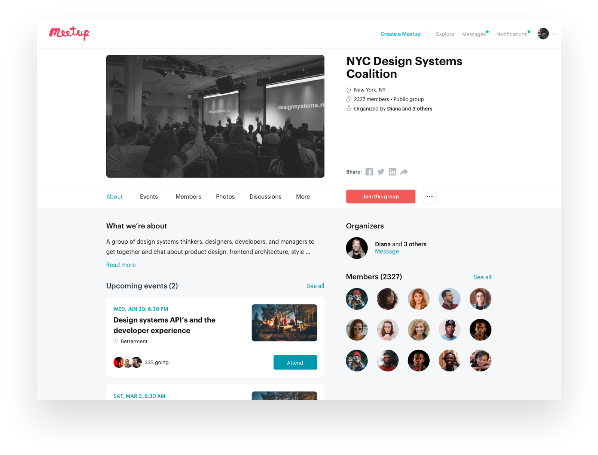

Groups Page Redesign
Reformatted the groups home page to give users easier access to what they want.
Overview
Context
Groups pages on Meetup are one of the most viewed pages - roughly 1 million views per month - on the platform due to the numerous tasks that members and organizers can accomplish there. Part of my task was to restructure the IA in such a way that members and organizers had better access to the things they look for from their group as well as integrating updated components from our new design system. Working with John Merlino, my part of the project took about a month to complete.
Outcome
This project was less about moving numbers and more about setting up other teams, such as our Organizer Success and Member Acquisition teams, for future success. Of course, having an improved IA increased RSVP's and showups in the single digit percentile, but the main goal for this project was allowing other teams to be able to iterate on the groups pages with other important features in a faster, streamlined way.
The updated design received better reviews from users overall and also has become the baseline framework for other designers and engineers to work off from.
Problems
Some key issues members and organizers brought up about the experience were:
- Members not getting a clear idea of what kind of events a group hosts due to them being poorly highlighted.
- Little recognition for organizers as well as ease of access reaching out to them if you are a member with questions.
- Difficulty gauging activity of a group for members to properly decide if this group is dormant or highly active.
Constraints
- Legacy tech stack prevented us from exploring more robust layouts and integrating our new design system faster.
- My team specifically had a time constraint due to this project being an intermediary project, so less time was spent refining and iterating on feedback post split test. We also needed to conclude the 2 week split-test before Q1 started.
- Other teams were running their own split tests, so we had to refrain from certain planned changes in order to not bias or influence their tests. Implementation of these changes were out of scope for me after the split test concluded.
Solutions
Highlight Upcoming Events
Part of the issue for not getting a comprehensive feel for a group is due to the lack of importance being placed on events. Yes, members join groups to get a taste of the community, but they mostly come to see events they can attend IRL. The old design structured the upcoming event to be a full-width component on the screen, but then pushed any further future events to the side, which many users missed. This was a problem since many groups had a wide flavor of events, so members found it hard to correctly gauge what a group was about, which lead to high churn and bouncing.
Previous design of Meetup Groups pages.
Updated design of Meetup Groups pages.
People First
Another issue organizers had was not being given the proper attention they deserve, both visually and as a resource. Part of it was because the same organizer component contained different styling, and the people components were stuck in the middle of the page. To fix this, we modified the right column of the page to be all about people. We show the organizer first as well as emphasizing the message button better, allowing people to easily spot and ask organizers questions.
Old people components (left) and updated people components (right).
The members components were stripped down because some valuable feedback we received stated that, while seeing the members of the group are nice, ultimately most of them are strangers, and the previous information we were showing them were not helpful to members nor did it have heavy influence in their decisioning when joining a group.
Takeaways
Prioritizing the Middle
Due to our legacy tech stack, shipping products are slower and more cumbersome than we'd like it to be. This type of product environment calls for many tradeoffs, which I found to usually always be in this "middle area". The area between where you are and where you'd like to be. It's up to the product teams to decide how they roll out these features, in a piecemeal manner or all at once.
Due to our team's time constraint of concluding the project before Q4 ended, we knew we had to go with the piecemeal proccess. During this, it became critical when deciding which pieces of our ideal vision we had to strip down and still serve the user problems. All of this, while still making sure the feel of the updated components do not clash much with the parts that haven't been replatformed yet, lead to the eventual full rollout of the updated design the first week of January, where 4 million users will view it monthly.